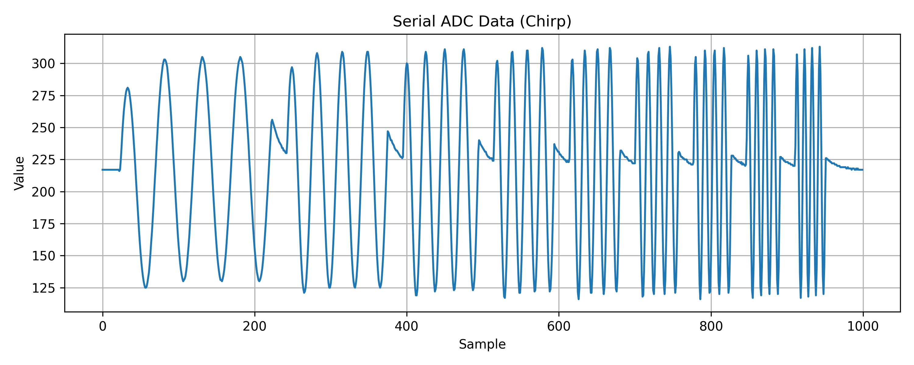
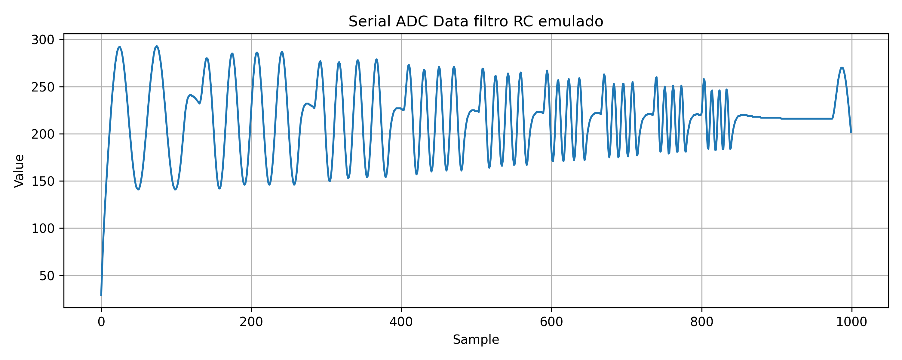
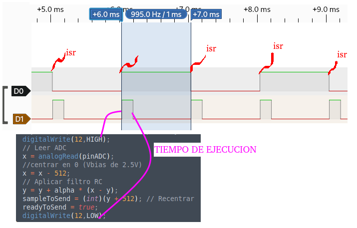
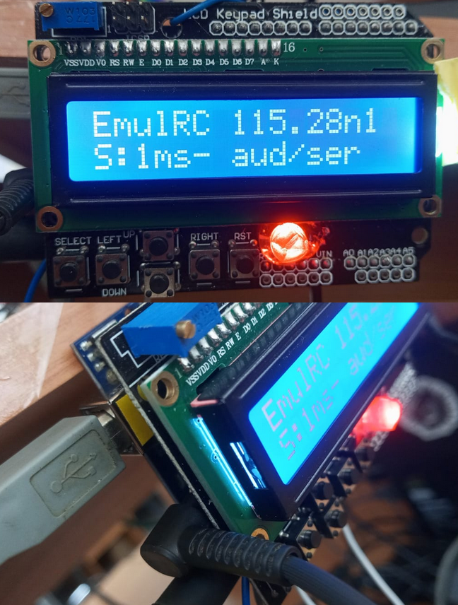

2026-03-17
bitacora:
02mar2026Sistema basado en microcontrolador. Entrada: señal de Audio tomada de PC. Periodo de muestreo Ts = 1 ms Salida de datos por serial 115200, 8n1.
Acondicionamiento de señal
+5V
│
[R1 4.5k]
│
|
│ hacia el ADC
Entrada ──||───●──> Vbias (~2.5V)
audio 10uF | entrada a uControlador
│
[R2 4.5k]
│
GNDDiagrama a bloques
audio ───────┐
│
┌──┴───────┐
│ EMULADOR │
└──┬───────┘
│
serial ────> logs via serial Generacion de archivo de audio chirp.wav en Julia
Este codigo genera una señal de audio para ejercitar el emulador, se trata de una chirp escalonada (con silencios) para barrer frecuencia y demostrar la funcionalidad de un RC emulado en uControlador.
using WAV
using Plots
#Generar el chirp con silencios entre cada frecuencia
gr()
fs = 44100
frecuencias = [20, 30, 40, 50, 60, 70, 80, 90, 100]
# duración del silencio (20 ms)
silencio = zeros(Int(fs * 0.02))
chirp_signal = vcat([
vcat(
sin.(2π * fn .* (0:1/fs:(4/fn - 1/fs))),
silencio
)
for fn in frecuencias
]...)
# vector de tiempo global
t = (0:length(chirp_signal)-1) ./ fs
# guardar archivo WAV
wavwrite(chirp_signal, "chirp.wav", Fs=fs)Filtro RC en Julia: y[n] = y[n-1] + alpha * (x[n] - y[n-1])
using WAV
# Leer archivo
x, fs = wavread("chirp.wav")
# Parámetros RC
fc = 40.0
RC = 1 / (2π * fc)
T = 1 / fs
alpha = T / (RC + T)
# Filtro RC discreto
y = similar(x)
y[1] = x[1]
for n in 2:length(x)
y[n] = y[n-1] + alpha * (x[n] - y[n-1])
end
# Guardar WAV
wavwrite(y, "filtered.wav", Fs=fs)Este es el filtro RC en julia: y[n] = y[n-1] + alpha * (x[n] - y[n-1])
Codigo C de RC
Solo se muestra la ISR ejecutada cada 1 ms
ISR(TIMER1_COMPA_vect)
{
static unsigned char signal = 0;
// Filtro RC
static float y = 0.0;
const float alpha = 0.2;
// Alternar pin para medir con analizador lógico
// Tick de sistema de tiempo real
signal = !signal;
digitalWrite(LED_BUILTIN, signal ? HIGH : LOW);
digitalWrite(12,HIGH);
// Leer ADC
x = analogRead(pinADC);
//centrar en 0 (Vbias de 2.5V)
x = x - 512;
// Aplicar filtro RC
y = y + alpha * (x - y);
sampleToSend = (int)(y + 512); // Recentrar para enviar valor entre 0-1023
readyToSend = true; // dato listo
digitalWrite(12,LOW);
}


